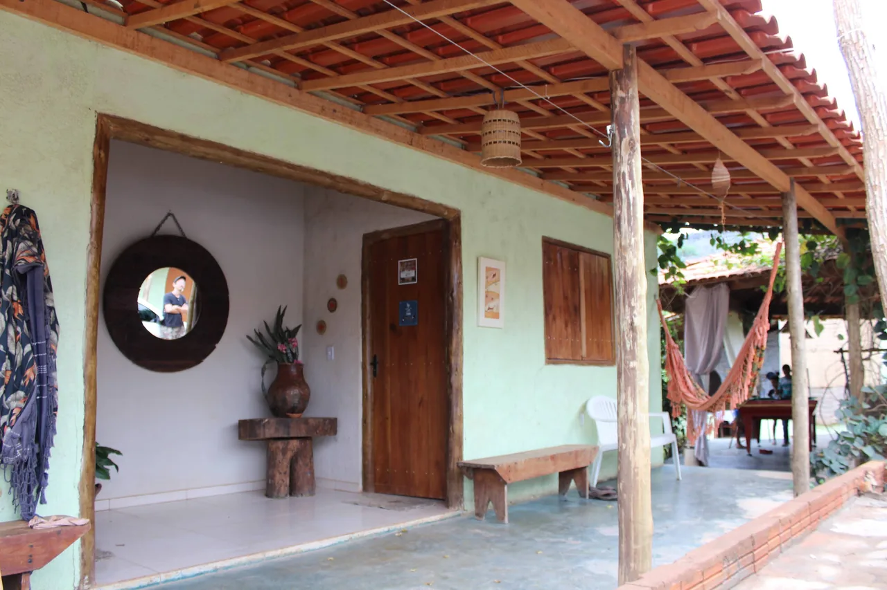
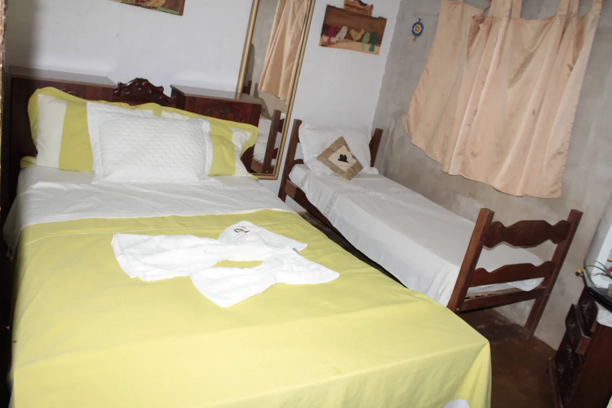
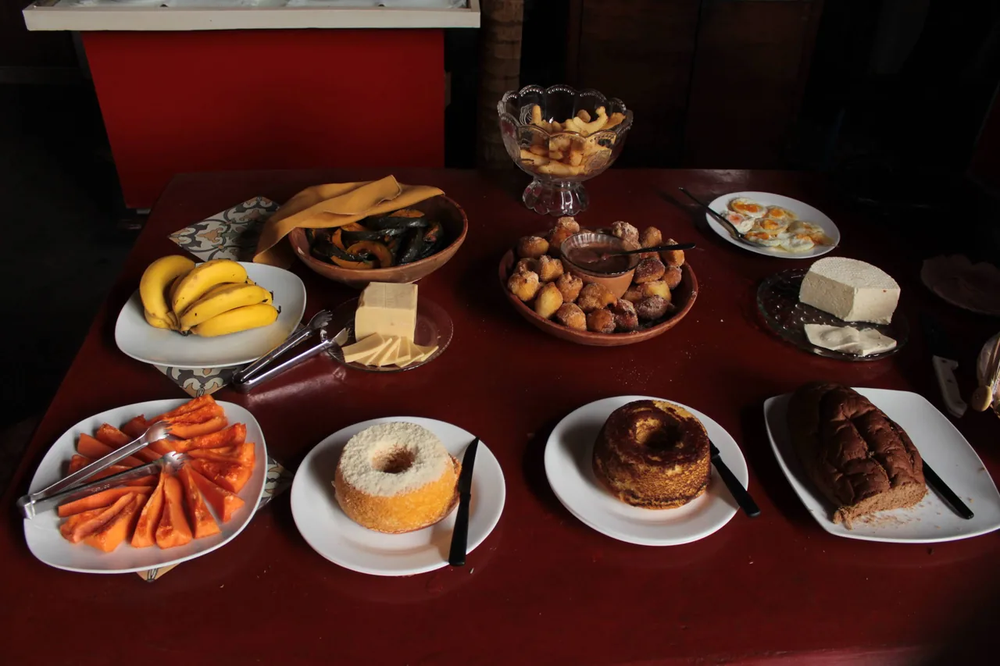
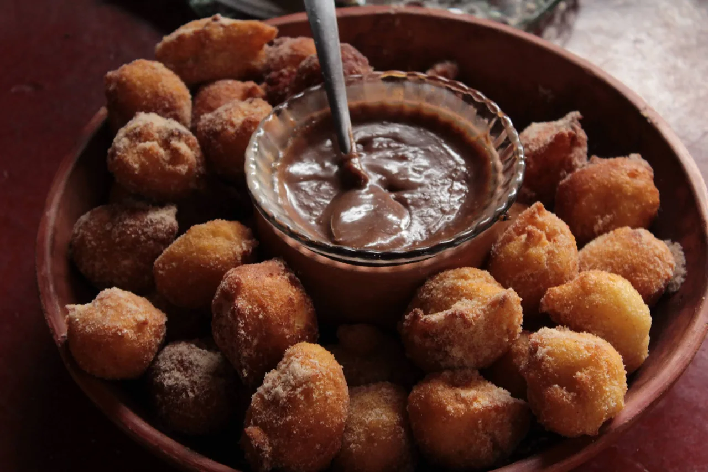
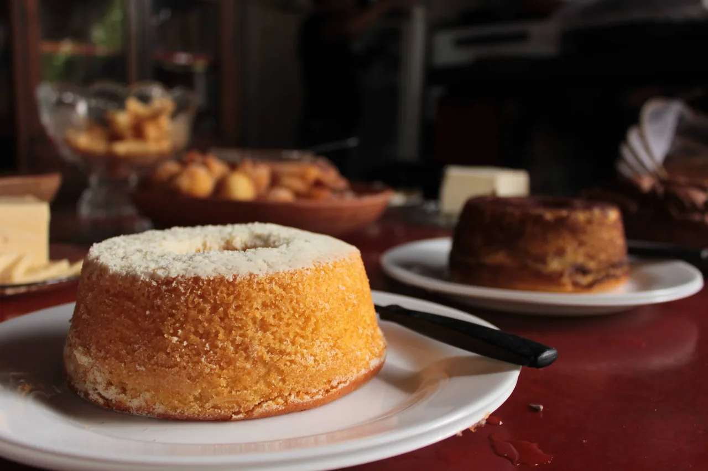
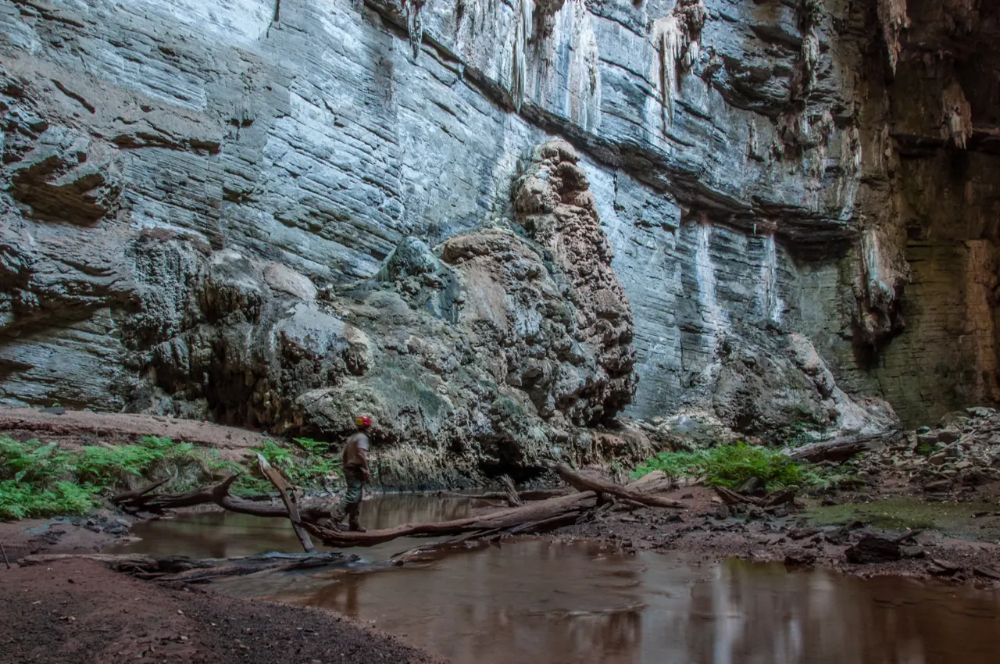

Ficar
Desfaça as malas, desacelere. Encontre no Recanto sua base para descansar entre os passeios.
Conhecer a hospedagem
FABIÃO I · JANUÁRIA · MINAS GERAIS
POUSADA & RESTAURANTE · NO VALE DO PERUAÇU
Hospedagem, mesa mineira e tempo para estar.
Seu recanto em Fabião I, no caminho do Peruaçu.
01 / O RECANTO
Antes de sair para explorar, um lugar para chegar. O Recanto das Pedras é pousada e restaurante em Fabião I: hospedagem de atmosfera rural, mesa mineira e uma pausa para aproveitar a viagem.
Nos relatos de quem passou por aqui, a comida caseira e o acolhimento caminham juntos. O Peruaçu dá o cenário. O Recanto recebe você.
Conhecer o PeruaçuDesfaça as malas, desacelere. Encontre no Recanto sua base para descansar entre os passeios.
Conhecer a hospedagemA mesa também faz parte da viagem. Conheça o restaurante e o jeito caseiro de receber em Minas.
Conhecer o restauranteDo Recanto para o entorno: reserve tempo para conhecer o Peruaçu e voltar sem pressa.
Conhecer o Peruaçu
02 / HOSPEDAGEM
A beleza de uma viagem também está na volta do passeio. No Recanto, a hospedagem tem o clima simples e acolhedor de uma pousada no interior de Minas.
Escolha suas datas e conte com uma conversa direta com a equipe para encontrar a acomodação disponível para a sua viagem.
03 / GASTRONOMIA
O passeio abre o apetite. A mesa do Recanto prolonga o encontro com Minas: comida caseira, um ambiente rústico e tempo para saborear a viagem.
Bolos, quitandas e a mesa do restaurante aparecem nas fotografias publicadas pela própria pousada. Converse com a equipe para conhecer as opções na data da sua visita.
Falar sobre o restaurante

Fotografias reais publicadas pelo proprietário no Google. Registros do acervo; as opções servidas podem variar. Consulte a equipe.
DEPOIS DO CAMINHO, A MESA.
Uma mesa, uma conversa, mais um pouco de Minas. Entre o descanso e o próximo passeio, deixe espaço para conhecer o restaurante do Recanto.
Ver mais do Recanto no Instagram

04 / O ENTORNO DO RECANTO
O Vale do Peruaçu é o cenário desta viagem. Faça do Recanto seu ponto de apoio para descobrir as paisagens da região — e um lugar para voltar depois do caminho.
Informações oficiais do parquePlaneje os passeios com as orientações oficiais de visitação do parque.
05 / GALERIA
A pousada, a mesa, os ambientes.
E a paisagem que acompanha a viagem.
8 fotografias
Recanto, quartos e mesa: fotografias do proprietário no Google, publicadas há 7 anos na consulta de 30/09/2026. Peruaçu: paisagens do entorno. Consulte o Instagram para registros atuais.
O RECANTO, NO DIA A DIA
Ambientes, encontros e novidades no perfil oficial.
@pousadarecantodaspedrasperuacu
Fotografia do acervo no Google. Acompanhe os registros atuais no Instagram.06 / QUEM JÁ ESTEVE NO RECANTO
Acolhimento, comida caseira, descanso e localização aparecem nos relatos públicos consultados. São experiências de quem viveu o Recanto — com origem aberta para você conferir.
322 avaliações no Google
Consultado em .
Os dados atuais estão no Google.
Acolhimento & comida
Ler relatos completos no Google“A pousada é rústica e muito acolhedora, lembra casa de vó. A comida é maravilhosa, típica comida caseira mineira, […]”
Atendimento & mesa
Ler relatos completos no Google“A equipe é super atenciosa, e q comida - meu Deus que delícia! Café da manhã e almoço muito fartos e saborosos.”
Descanso & noite
Ler relatos completos no Google“A cama é confortável e o chuveiro funciona bem. Vale a pena apreciar a noite estrelada na área da piscina, é um espetáculo à parte.”
Atmosfera & cuidado
Ler relatos completos no Google“Ambiente rústico, bem decorado, acolhedor. A proprietária e funcionárias são super simpáticas. Café da manhã diversificado e com muitas opções.”
Mesa & hospitalidade
Ler relatos completos no Google“Uma equipe carismática e competente que fazem uma comida muito saborosa e variada como se estivessimos na casa de nossa vó!”
Acolhimento & restaurante
Ler relatos completos no Google“Um lugar mágico, muito acolhedor! Além disso o restaurante da pousada serve um almoço delicioso no fogão à lenha! Tudo perfeito!!”
Seleção de trechos de avaliações públicas, preservados como publicados. Consulte os relatos completos e outras experiências no Google.
07 / LOCALIZAÇÃO
Fabião I · Januária
Minas Gerais, Brasil · CEP 39480-000
Abra a ficha do Recanto das Pedras no Google Maps para localizar a pousada. Se precisar de orientação pessoal para chegar, converse com a equipe.
Abrir Recanto das Pedras no mapaFABIÃO I · JANUÁRIA
Seu ponto de apoio no Vale do Peruaçu.
RECANTO DAS PEDRAS
Uma pousada para ficar. Uma mesa para saborear. Converse com a equipe e planeje seus dias no Recanto das Pedras.